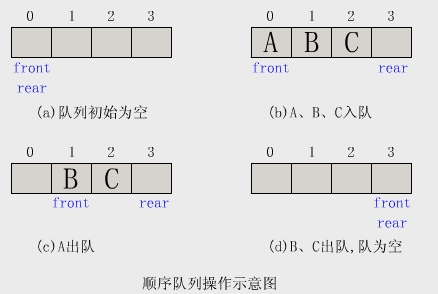
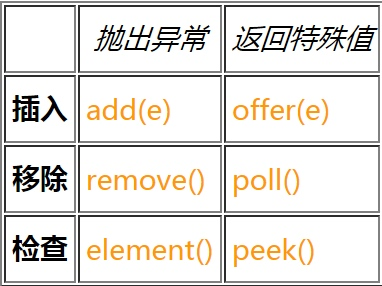

算法的话其实是个重点，因为最后都是要你写代码，所以算法还是需要花不少时间准备，这里有太多算法题，写不全，我的建议是没事多在OJ上刷刷题（牛客网、leetcode等），剑指offer上的算法要能理解并自己写出来，编程之美也推荐看一看。
推荐书籍：《大话数据结构》《剑指offer》《编程之美》
1. 链表与数组。
1.1 概述
数组 是将元素在内存中连续存放，由于每个元素占用内存相同，可以通过下标迅速访问数组中任何元素。但是如果要在数组中增加一个元素，需要移动大量元素，在内存中空出一个元素的空间，然后将要增加的元素放在其中。同样的道理，如果想删除一个元素，同样需要移动大量元素去填掉被移动的元素。如果应用需要快速访问数据，很少插入和删除元素，就应该用数组。
链表 中的元素在内存中不是顺序存储的，而是通过存在元素中的指针联系到一起，每个结点包括两个部分：一个是存储 数据元素 的 数据域，另一个是存储下一个结点地址的 指针。 如果要访问链表中一个元素，需要从第一个元素开始，一直找到需要的元素位置。但是增加和删除一个元素对于链表数据结构就非常简单了，只要修改元素中的指针就可以了。如果应用需要经常插入和删除元素你就需要用链表。
1.2 内存存储区别
数组从栈中分配空间, 对于程序员方便快速,但自由度小。
链表从堆中分配空间, 自由度大但申请管理比较麻烦.
1.3 逻辑结构区别
数组必须事先定义固定的长度（元素个数），不能适应数据动态地增减的情况。当数据增加时，可能超出原先定义的元素个数；当数据减少时，造成内存浪费。
链表动态地进行存储分配，可以适应数据动态地增减的情况，且可以方便地插入、删除数据项。（数组中插入、删除数据项时，需要移动其它数据项）
1.4 总结
1、存取方式上，数组可以顺序存取或者随机存取，而链表只能顺序存取；
2、存储位置上，数组逻辑上相邻的元素在物理存储位置上也相邻，而链表不一定；
3、存储空间上，链表由于带有指针域，存储密度不如数组大；
4、按序号查找时，数组可以随机访问，时间复杂度为O(1)，而链表不支持随机访问，平均需要O(n)；
5、按值查找时，若数组无序，数组和链表时间复杂度均为O(1)，但是当数组有序时，可以采用折半查找将时间复杂度降为O(logn)；
6、插入和删除时，数组平均需要移动n/2个元素，而链表只需修改指针即可；
7、空间分配方面： 数组在静态存储分配情形下，存储元素数量受限制，动态存储分配情形下，虽然存储空间可以扩充，但需要移动大量元素，导致操作效率降低，而且如果内存中没有更大块连续存储空间将导致分配失败； 链表存储的节点空间只在需要的时候申请分配，只要内存中有空间就可以分配，操作比较灵活高效；
2. 队列和栈，出栈与入栈。
2.1 队列
队列是一种操作受限制的线性表，它只允许在表的前端（front）进行删除操作，而在表的后端（rear）进行插入操作。进行插入操作的端称为队尾，进行删除操作的端称为队头。 队列中没有元素时，称为空队列。在队列这种数据结构中，最先插入的元素将是最先被删除的元素；反之最后插入的元素将是最后被删除的元素，因此队列又称为“先进先出”（FIFO—first in first out）的线性表。
队列空的条件：front=rear
队列满的条件： rear = MAXSIZE
2.2 顺序队列
建立顺序队列结构必须为其静态分配或动态申请一片连续的存储空间，并设置两个指针进行管理。一个是队头指针front，它指向队头元素；另一个是队尾指针rear，它指向下一个入队元素的存储位置．

顺序队列中的溢出现象：
下溢：当队列为空时，做出队运算产生的溢出现象。“下溢”是正常现象，常用作程序控制转移的条件。
真上溢：当队列满时，做进栈运算产生空间溢出的现象。“真上溢”是一种出错状态，应设法避免。
假上溢：由于入队和出队操作中，头尾指针只增加不减小，致使被删元素的空间永远无法重新利用。当队列中实际的元素个数远远小于向量空间的规模时，也可能由于尾指针已超越向量空间的上界而不能做入队操作。该现象称为"假上溢"现象。
2.3 Java中Queue
Queue继承于Collection，除了基本的 Collection 操作外，队列还提供其他的插入、提取和检查操作。每个方法都存在两种形式：一种抛出异常（操作失败时），另一种返回一个特殊值（null 或 false，具体取决于操作）。

add()和offer()都是将指定的元素插入队列 add() 在成功时返回 true，如果当前没有可用的空间，则抛出 IllegalStateException。 offer()当使用有容量限制的队列时,无法插入元素，而只是抛出一个异常。
element() 和 peek() 返回但不移除队列的头，如果队列为空，peek()返回 null，element()抛出异常。
remove() 和 poll() 方法可移除和返回队列的头，它们仅在队列为空时其行为有所不同：remove() 方法抛出一个异常，而 poll() 方法则返回 null。
2.4 栈和队列的区别：
队列是FIFO的（先进先出），堆栈是FILO的（现今后出）
栈是限定只能在表的一端进行插入和删除操作的线性表。 队列是限定只能在表的一端进行插入和在另一端进行删除操作的线性表
栈只能从头部取数据，也就最先放入的需要遍历整个栈最后才能取出来，而且在遍历数据的时候还得为数据开辟临时空间； 队列基于地址指针进行遍历，而且可以从头或尾部开始遍历，但不能同时遍历，无需开辟临时空间，因为在遍历的过程中不影像数据结构，速度要快的多。
3. 链表的删除、插入、反向。
4. 字符串操作。
在JAVA语言中，字符串数据实际上由String类所实现的。Java字符串类分为两类：一类是在程序中不会被改变长度的不变字符串；二类是在程序中会被改变长度的可变字符串。Java环境为了存储和维护这两类字符串提供了 String和StringBuffer两个类。
4.1String的一些常用操作
<1>字符串创建
String str="This is a String";
或者
String str=new String（"This is a String");
<2>字符串长度
String str= "This is a String";
int len =str.length();
<3>指定字符或子字符串的位置
String str="Thisis a String";
Int index1 =str.indexOf("i"); //2
Int index２＝str.lastIndexOf("i")； //12
<4>判断两个字符串是否相等
String str="This is a String";
Boolean result=str.equals("This is another String");
<5>得到指定位置的字符
String str="This is a String";
char chr=str.charAt(3);
<6>截取子字符串
str＝str.substring(int beginIndex);
截取掉str从首字母起长度为beginIndex的字符串，将剩余字符串赋值给str；
str＝str.substring(int beginIndex，int endIndex);
<6>字符串合并
String str="This is a String";
String str1=str.concat("Test"); //str1="This is a String Test"
5. Hash表的hash函数，冲突解决方法有哪些。
5.１Hash表
哈希表（Hash table，也叫散列表），是根据key而直接进行访问的数据结构。也就是说，它通过把key映射到表中一个位置来访问记录，以加快查找的速度。这个映射函数叫做散列函数，存放记录的数组叫做散列表。
以数据中每个元素的关键字K为自变量，通过散列函数H（k）计算出函数值，以该函数值作为一块连续存储空间的的单元地址，将该元素存储到函数值对应的单元中。
哈希表存储的是键值对，其查找的时间复杂度与元素数量多少无关，哈希表在查找元素时是通过计算哈希码值来定位元素的位置从而直接访问元素的，因此，哈希表查找的时间复杂度为O（1）。
5.2 哈希表的构造方法
5.2.1 直接定址法
取关键字或者关键字的某个线性函数值作为哈希地址,即 H(Key)=Key或者H(Key)=a*Key+b(a,b为整数) 这种散列函数也叫做自身函数.如果H(Key)的哈希地址上已经有值了,那么就往下一个位置找,直到找到H(Key)的位置没有值了就把元素放进去. 此法仅适合于：地址集合的大小 等于 关键字集合的大小
5.2.2 数字分析法
分析一组数据,比如一组员工的出生年月,这时我们发现出生年月的前几位数字一般都相同,因此,出现冲突的概率就会很大,但是我们发现年月日的后几位表示月份和具体日期的数字差别很大,如果利用后面的几位数字来构造散列地址,则冲突的几率则会明显降低. 因此数字分析法就是找出数字的规律,尽可能利用这些数据来构造冲突几率较低的散列地址. 此法适于:能预先估计出全体关键字的每一位上各种数字出现的频度。
5.2.3 平方取中法
以关键字的平方值的中间几位作为存储地址（哈希地址）。求“关键字的平方值” 的目的是“扩大差别” ，同时平方值的中间各位又能受到整个关键字中各位的影响。
此法适于:关键字中的每一位都有某些数字重复出现频度很高的现象。
5.2.4 折叠法
将关键字分割成若干部分，然后取它们的叠加和为哈希地址。两种叠加处理的方法：移位叠加:将分 割后的几部分低位对齐相加；间界叠加:从一端沿分割界来回折叠，然后对齐相加。 此法适于：关键字的数字位数特别多。
5.2.5 随机数法
设定哈希函数为:H(key) = Random(key)其中，Random 为伪随机函数 此法适于：对长度不等的关键字构造哈希函数。
5.2.6 除留余数法
取关键字被某个不大于散列表表长m的数p除后所得的余数为散列地址.即 哈希函数为:H(key) = key MOD p ( p≤m )，其中， m为表长，p 为不大于 m 的素数。
5.3 哈希表冲突解决方法
哈希表处理冲突主要有开放寻址法、再散列法、链地址法（拉链法）和建立一个公共溢出区四种方法。 通过构造性能良好的哈希函数，可以减少冲突，但一般不可能完全避免冲突，因此解决冲突是哈希法的另一个关键问题。 “处理冲突” 的实际含义是：为产生冲突的关键字寻找下一个哈希地址。
5.3.1 开放定址法
一旦发生了冲突，就去寻找下一个空的散列地址，只要散列表足够大，空的散列地址总能找到，并将记录存入。
<1> 线性探测
冲突发生时，顺序查看表中下一单元，直到找出一个空单元或查遍全表。
公式：
fi(key) = (f(key)+di) MOD m (di=1,2,3,......,m-1)
<2> 二次探测法
冲突发生时，在表的左右进行跳跃式探测，双向寻找到可能的空位置。
公式：
fi(key) = (f(key)+di) MOD m (di = 12, -12, 22, -22,……, q2, -q2, q <= m/2)
<3> 随机探测法
在冲突时，对于位移量 di 采用随机函数计算得到，我们称之为随机探测法。
公式：
fi(key) = (f(key)+di) MOD m (di是一个随机数列)
线性探测再散列容易产生“二次聚集”，即在处理同义词的冲突时又导致非同义词的冲突。 线性探测再散列的优点是：只要哈希表不满，就一定能找到一个不冲突的哈希地址，而二次探测再散列和伪随机探测再散列则不一定。
5.3.2链地址法
将所有哈希地址相同的记录都链接在同一链表中。各链表上的结点空间是动态申请的，故它更适合于造表前无法确定表长的情况。 处理冲突简单，且无堆积现象，即非同义词决不会发生冲突，因此平均查找长度较短；
5.3.3 再哈希法
这种方法是同时构造多个不同的哈希函数：
Hi=RH1（key），i=1，2,3，…,n.
当哈希地址Hi=RH1（key）发生冲突时，再计算Hi=RH2（key）……，直到冲突不再产生。这种方法不易产生聚集，但增加了计算时间。
5.3.4 建立公共溢出区
这种方法的基本思想是：将哈希表分为基本表和溢出表两部分，凡是和基本表发生冲突的元素，一律填入溢出表.(注意：在这个方法里面是把元素分开两个表来存储)